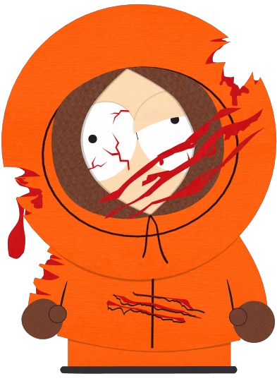
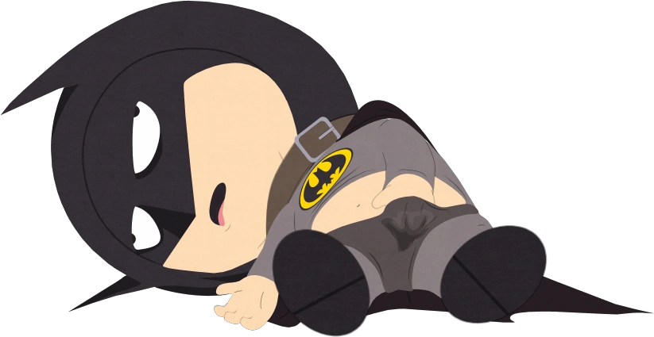
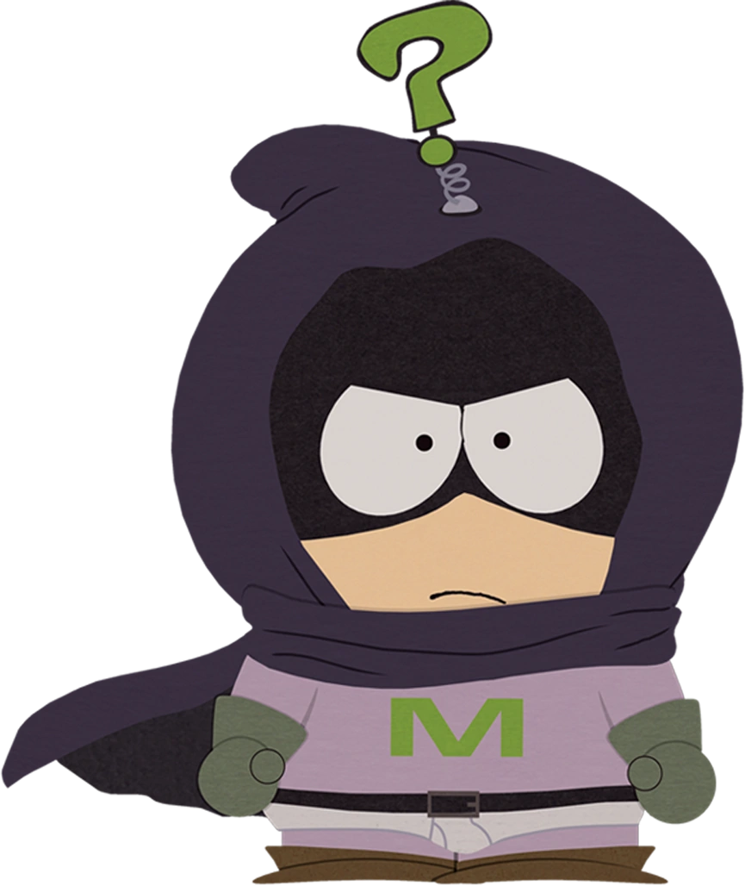
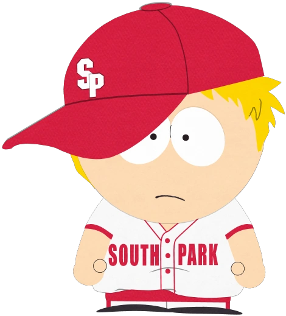

Generally

Kenneth "Kenny" McCormick, voiced by Matt Stone, is one of South Park's main characters, along with Eric Cartman, Stan Marsh, and Kyle Broflovski. He first appears in the short films both entitled The Spirit of Christmas in 1992 and 1995. He is voiced by Mike Judge in the feature film South Park: Bigger, Longer & Uncut and Eric Stough in "The Jeffersons", "Lice Capades", "Mysterion Rises", and "Turd Burglars".
Kenny is most famous for dying in almost every episode in the first five seasons of South Park. He is also easily recognizable for almost always wearing an orange parka, or just having his face hidden, that covers most of his face and muffles his speech. In "Mysterion Rises" Kenny, who is revealed to be the superhero Mysterion, reveals that he has the power of immortality, in a sense, and that he just wakes up in his bed after having died. He is then upset that his friends never remember him dying, and even kills himself in front of everyone to prove himself.
The character was killed off the show in the Season Five episode, "Kenny Dies", but returned in the following season, at the end of "Red Sleigh Down" and has since been a regular character; however, he now only dies occasionally. In most of the episodes in the tenth and eleventh seasons, he tends to recede into the background, though this tendency seems to have ended with the Season Eleven finale. Throughout the tenth, twelfth, eighteenth, nineteenth, twentieth, and twenty-third seasons, Kenny did not die once. Kenny died three times in total in Season Thirteen, five times in Season Fourteen, and once in seasons fifteen, sixteen, twenty-one and twenty-two.
Deaths
Kenny McCormick is best known in the show for his recurring death in nearly every episode of the first five seasons, often followed by some variant of "Oh my God, they killed Kenny!" and "You bastards!" from his friends Stan and Kyle, respectively. The gag has many precedents, going back at least as far as the regular cry, "You rotten swine! You've deaded me!" by Bluebottle voiced by Peter Sellers in "The Goon Show" in 1951. In the first few episodes, Kyle said the entire phrase. Later on, it varied, depending on who killed Kenny.
Kenny has died and come back over 103 times in the franchise (86 in the series, to date, two in the early animated shorts, six in other authorized TV parodies, six times in the video game, and twice in the movie).
He has also been killed nine different ways in the opening sequence. Kenny's most recent death was in Season Fifteen episode, "The Poor Kid" when he is mauled by a Giant Reptilian Bird. Kenny died in almost all the episodes until the writers killed him off permanently in the fifth season, in "Kenny Dies", but he returned at the end of the next season's finale, "Red Sleigh Down", remarking that he has "just been over there" (pointing off-screen).
Although he does not appear in "A Ladder to Heaven", "The Biggest Douche in the Universe", "The Death Camp of Tolerance", or "The Return of the Fellowship of the Ring to the Two Towers", he technically is in them, as Cartman mixed his ashes with milk and drank it, causing his soul to be trapped inside of him. By the sixth season, Matt and Trey got rid of the practice of killing him in every episode; they got tired of the joke. The reason why Kenny died continuously was given in an interview with Matt Stone and Trey Parker, who stated vaguely that it was because Kenny is poor. Kenny is always resurrected for the next episode, although the explanations for his reappearance varied. In "Cartman Joins NAMBLA", it is explained that his soul returns to his mother, takes to another body, is reborn, and then grows to be 8 or 9 years old in record time (and somehow retaining physical appearance and memories), while another simply had Kenny magically reappearing out of thin air in the second part of the two-part episode "Cartman's Mom is a Dirty Slut" after he was run over by a train in the first. The most recent explanation comes from the episode "Mysterion Rises", in which Kenny himself reveals he is unable to stay dead and always wakes up in bed eventually, while nobody else remembers his death. However, in the next episode, "Coon vs. Coon & Friends", it is confirmed that, while he may wake up in his bed, it is indeed his mother that gives birth to him every time. Kenny's "immortality" may be connected with the Cult of Cthulhu, as Carol mutters under her breath, "I knew we should have never gone to those cult meetings."
None of the other characters seem to find this at all unusual. Stan merely greeted Kenny when he materialized, and no one else even blinked. Kenny himself is aware of the fact that he is constantly killed, expressing resentment over the fact that Stan was worried about Kyle's impending death while never mourning Kenny, and opting to take home economics classes over wood shop partly because he was afraid of getting killed by the dangerous power tools in the shop class, and cheering after realizing he had survived the episode "Mr. Hankey, the Christmas Poo". In "Best Friends Forever", Kenny's will states "In the highly likely event of my death..." In "Mysterion Rises", he says to Hindsight "Nobody even remembers me dying. I go to school the next day, and everyone is just like, "Oh, hey Kenny." Even if they had seen me get decapitated with their own eyes." This would suggest that Kenny is fully aware of his deaths, but nobody else is. In "Mysterion Rises" and "Coon vs. Coon & Friends", Kenny points out that nobody can remember his deaths. He even shoots himself in the head after a desperate plea to his friends to try and remember this time, but to no avail.
Other characters occasionally seem to be vaguely aware of Kenny's deaths. In "Cartmanland", Kenny dies in Cartman's theme park, and when the lawyers suing him mention "that boy who died," Cartman replies with, "Who, Kenny? He dies all the time." It would seem that the others are also aware of Kenny's deaths, but are quite nonchalant about them since they know he will re-appear. Stan and Kyle say their "Oh my God, they killed Kenny!" lines like they do not care in "Gnomes", in which the gnomes accidentally crush Kenny, and mourn over this tragedy, but are confused as to why the kids do not seem to care. In "Chef Goes Nanners", Kenny eats antacid tablets, thinking they were mints, and drinks some water afterwards. When Kenny explodes, the four boys and Kyle's dad laugh and applaud, and Stan even says, "That was a good one." And in "Fourth Grade" Kenny dies on a wheeled sled and Stan says "Well, who didn't see that coming." In other episodes, however, Kenny's death is sometimes taken more seriously for plot purposes, especially in "Kenny Dies", where it is considered a major dramatic event in the boys' lives. In "City on the Edge of Forever (Flashbacks)" Stan at one point reacts incredulously to the idea Kenny could have ever died more than once, and Cartman agrees that it "wouldn't make sense."
Financial State
Because Kenny's family is so poor, they eat frozen waffles with no side dishes for dinner and bread sandwiches for breakfast. In "Starvin' Marvin", Kenny won a can of green beans for his family, though they could not afford a can opener. In "Sexual Healing", Kenny's family ate microwave pizza. Cartman frequently exploits Kenny's poverty by offering him money for performing strange or dangerous tasks. In "The List", Cartman frequently mentions that his family eats Pop-Tarts for dinner. This is actually proven at the end of the episode; Kenny and his family are all seen eating Pop-Tarts before a stray bullet kills Kenny at the dinner table. In "Best Friends Forever" it is shown that all of Kenny's possessions are kept in a small cardboard box. Though his family is extremely poor, his parents are known drug addicts and heavy drinkers. They drink so much that only a fairly large income would pay for it, which might explain the degree of poverty. In "Lil' Crime Stoppers", it is suggested that the McCormicks make meth for a drug cartel and in "The Poor Kid", they are arrested for having a meth lab.
Despite his family's poverty, Kenny always manages to stay current with trends in toys and video games, such as maintaining a World of Warcraft subscription (and a computer to play it on), being the first kid in South Park to get a PSP, or being able to buy Chinpokomon dolls as well being the only child in the town to have a Go Go Action Bronco, a battery-powered miniature car. Kenny might have gotten these items from the odd jobs and dares from his friends and neighbors since hisbparents spend all their money on drugs and alcohol and eat whatever food is leftover. His mother wasbalso able to afford $100 worth of Ritalin in "Timmy 2000', although it caused him and all of his friends to be extremely boring. In "Ginger Cow", Kenny is seen recording with an iPhone, which seems to be his, as he was taking it with him away. He might have been able to afford an iPhone or got it from somebody.
Heroism
Despite these problems, Kenny is often portrayed as the hero of the group; indeed, many of his deaths have been acts of heroic self-sacrifice. Among others, he fixed the Hells Pass Hospital backup generator by using himself to connect two wires (resulting in electrocution), and he once smashed a shell with his head to release Moses from captivity inside the shell (smashing his head in too). Arguably the most touching of these deaths was in South Park: Bigger, Longer & Uncut, when he wishes for everything to be back to normal despite that he would knowingly go to hell in the process (he instead almost immediately ascended to Heaven, where he was gifted with a Halo, wings, and thirty or so busty, naked women. Apparently one saving the earth from eternal damnation causes God to overlook one not being a Mormon). His ascension also marked the first, and to date only time his entire face has been seen (in other instances he has some form of cover, such as a baseball cap or a snorkel mask) and the first time his voice could be heard clearly. "Super Best Friends" depicts Kenny as a willing martyr for a cult he has recently joined. In "Best Friends Forever", Kenny used the Golden PSP to defeat Satan's army.
The most shining example of his heroism, however, is his role as Mysterion, a hero who defends the town from evil forces including Professor Chaos and the Coon. First appearing in "The Coon" with an unclear identity and returning in "Coon 2: Hindsight" Mysterion is shown to be a resourceful and intelligent hero with a strong sense of morals and justice - however his identity remained unknown until "Mysterion Rises" during which Mysterion opens the episode with a monologue mentioning having a power - Mysterion is later revealed to have been Kenny the entire time, and his super ower bishis inability to die. It is at this point that Kenny begins taking upon the role of the hero; though his loyal characteristics and sense of morality are strong, his increasing frustration becomes apparent when he confronts his friends for not remembering his many deaths.
He spends most of "Coon vs. Coon & Friends" trying to come to terms with his powers, and at the end he begs Cthulhu to bring back the other Coon Friends making the ultimate sacrifice by offering himself up, noting "only an immortal can kill another immortal", meaning if Cthulhu killed Mysterion, he would not be reborn.
Sport
He played football in the Season One episode, "Big Gay Al's Big Gay Boat Ride", was part of the dodgeball team in the Season Two episode, "Conjoined Fetus Lady", and played Center Field on the baseball team in the Season Nine episode, "The Losing Edge". In "The Losing Edge" and "Big Gay Al's Big Gay Boat Ride", the number on the back of his shirt is the number 13, a joke on how Kenny is unlucky due to being in poverty and dying all the time. In "Conjoined Fetus Lady", his number is 69, a reference to his perverted sense of humor. Kenny can also play tetherball, but ended up getting strangled by it in "Mecha-Streisand". In "Poor and Stupid" Kenny is shown to love NASCAR. In "Grey Dawn" he was seen playing street hockey with the rest of the boys. He has also played basketball with Cartman, Stan, and Kyle.